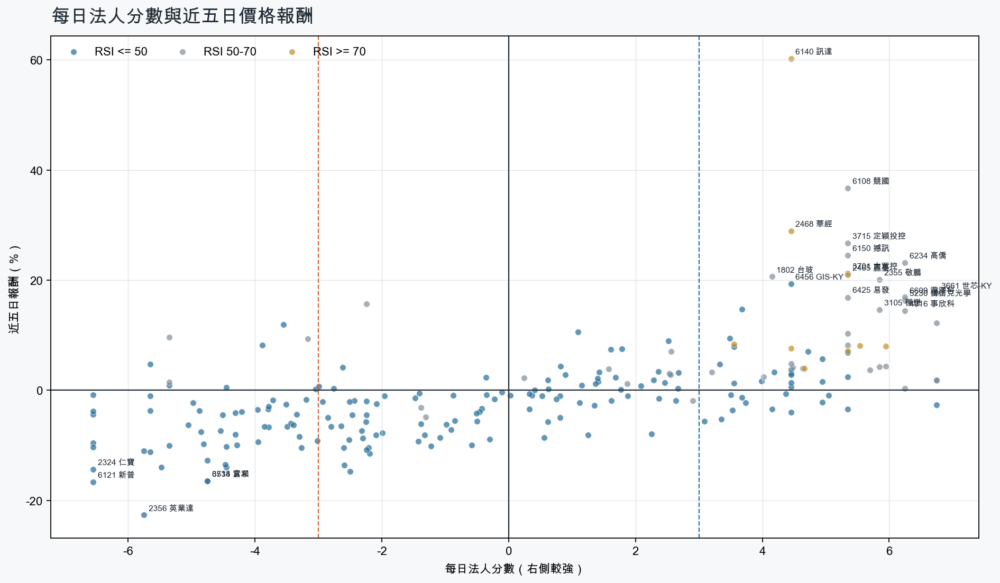
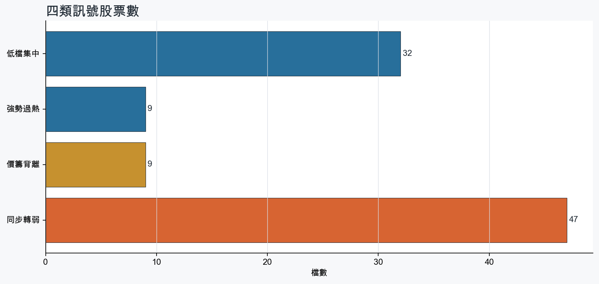
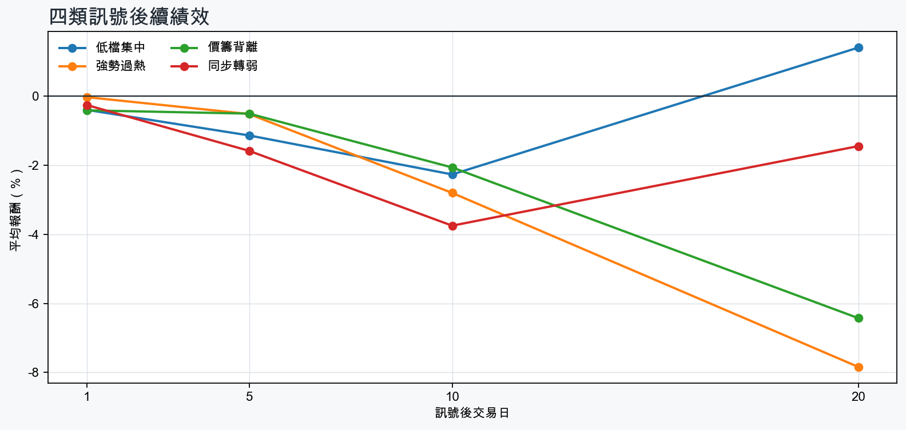

市場情緒偏空
近5日法人合計-2,109,507 張
篩選池上漲比例43.2%
籌碼好 / RSI低15 檔
籌碼差 / 價跌15 檔



EPS × PE VALUATION
法人常用的相對估值
顯示保守、基準與樂觀估值帶，不把單一數字包裝成精準目標價。
最新累計 EPS 依季數年化 × 同產業有效 P/E 的 Q25／中位數／Q75。排除本公司、非正 P/E，並以 1.5×IQR 排除離群值。估值帶是公開資料篩選值，不是法人目標價；未使用分析師預估 EPS。
MOOD × MONEY
情緒與籌碼雷達
熱度代表被討論程度；情緒分與法人方向分開計算。熱門不等於適合追價，樣本不足也不硬判多空。
| 股票 | 情緒 | 討論熱度 | 情緒 × 籌碼 | 情緒 × 基本面 |
|---|---|---|---|---|
| 1815 富喬低檔集中 | 偏空 -26.2信心 79 | 1001 篇 / 66 留言 / 3 則新聞 | 法人布局、市場悲觀法人分 +5.0 | 基本面佳、情緒悲觀基本面分 +3.6 |
| 2376 技嘉同步轉弱 | 中性分歧 -2.3信心 73 | 921 篇 / 41 留言 / 3 則新聞 | 高熱分歧法人分 -6.5 | 基本面與情緒分歧基本面分 +3.0 |
| 3189 景碩同步轉弱 | 偏空 -33.9信心 56 | 751 篇 / 11 留言 / 3 則新聞 | 情籌雙弱法人分 -4.8 | 基本面佳、情緒悲觀基本面分 +3.6 |
| 2356 英業達同步轉弱 | 偏多 +29.7信心 30 | 520 篇 / 0 留言 / 3 則新聞 | 熱門但法人撤退法人分 -5.8 | 基本面與情緒共振基本面分 +3.0 |
| 2324 仁寶同步轉弱 | 偏空 -29.7信心 30 | 520 篇 / 0 留言 / 3 則新聞 | 情籌雙弱法人分 -6.5 | 基本面佳、情緒悲觀基本面分 +2.0 |
| 3714 富采同步轉弱 | 中性分歧 -9.9信心 30 | 520 篇 / 0 留言 / 3 則新聞 | 情籌混合法人分 -4.8 | 基本面與情緒分歧基本面分 +1.2 |
| 3005 神基同步轉弱 | 偏多 +29.7信心 30 | 520 篇 / 0 留言 / 3 則新聞 | 熱門但法人撤退法人分 -5.7 | 基本面與情緒共振基本面分 +3.0 |
| 3044 健鼎價籌背離 | 偏多 +29.7信心 30 | 520 篇 / 0 留言 / 3 則新聞 | 熱門但法人撤退法人分 -3.9 | 基本面與情緒共振基本面分 +3.6 |
| 6112 邁達特價籌背離 | 中性分歧 +0.0信心 30 | 520 篇 / 0 留言 / 3 則新聞 | 情籌混合法人分 -3.2 | 基本面與情緒分歧基本面分 +3.0 |
| 6209 今國光價籌背離 | 中性分歧 +0.0信心 30 | 520 篇 / 0 留言 / 3 則新聞 | 情籌混合法人分 -4.5 | 基本面與情緒分歧基本面分 +3.6 |
| 1909 榮成價籌背離 | 偏多 +29.7信心 30 | 520 篇 / 0 留言 / 3 則新聞 | 熱門但法人撤退法人分 -3.0 | 基本面與情緒共振基本面分 +3.0 |
| 2618 長榮航強勢過熱 | 中性分歧 -9.9信心 30 | 520 篇 / 0 留言 / 3 則新聞 | 情籌混合法人分 +6.0 | 基本面與情緒分歧基本面分 +3.6 |
01
籌碼好 / RSI低
優先研究基本面；法人續買且價格止穩時，才適合分批觀察。
| 股票 / 確認狀態 | 每日法人分 | 浦男式近似 | 法人加速度 | RSI / 相對強弱 | 量價確認 | 融資融券 | 每週集保確認 | 基本面 | EPS × 同業 P/E 估值 | 情緒 / 情籌 | 近期消息 | 論壇討論 |
|---|---|---|---|---|---|---|---|---|---|---|---|---|
| 3019 亞光等待確認 · 96 分籌碼有訊號，但價格尚未確認 | +5.3法人 +4,714 張 / 4 天 | 接近 · 80法人籌碼偏多；法人買盤加速；買超具延續性；留意未站月線、中期均線未翻多 | +1,219 張近3日 +4,162 / 連續 -1 日 | 47.4相對大盤 +7.4% | 量比 1.08確認分 +2.9收盤跌破20日線；20日線低於60日線 | -%融資 - 張 / 融券 - 張 | +1.65 pp1000張 +1.41 pp | 單月營收年增 +2.7%；累計營收年增 +12.3%；2026 Q3 累計 EPS 5.98仍需觀察下一期財報延續性來源：公開資訊觀測站 | 基準 NT$ 153.2估值帶 100.4–209.6現價 127.5 · 估值帶內 · 距基準 +20.1%2026 Q3 累計 EPS 5.98 → 年化 7.97光電同業 P/E 12.59／19.21／26.29 · n=35 · 信心較高以 Q3 累計 EPS 年化，不等同分析師全年預估來源：TWSE／TPEx 每日本益比 | 偏多 +29.7熱度 52 / 信心 30情籌共振 | 亞光(3019) 今日股價與討論 - 股市爆料同學會CMoney · 11/12亞光(3019)數位相機出貨三年翻4倍，2026年預估突破400萬台、DDR3供貨無虞成關鍵優勢鉅亨網 · 10/12 | 近期沒有明確提及本股的論壇樣本 |
| 2034 允強可研究 · 90 分籌碼與價格確認，可列研究清單 | +4.2法人 +4,157 張 / 4 天 | 接近 · 86中期均線偏多；法人籌碼偏多；法人買盤加速；留意未站月線、動能位置非最佳 | +13 張近3日 +2,176 / 連續 +1 日 | 41.7相對大盤 +11.6% | 量比 0.94確認分 +2.5收盤跌破20日線 | -%融資 - 張 / 融券 - 張 | +1.61 pp1000張 +1.92 pp | 單月營收年增 +99.8%；累計營收年增 +11.4%；2026 Q3 累計 EPS 0.542026 Q3 累計營益率 4.8%來源：公開資訊觀測站 | 基準 NT$ 7.80估值帶 6.25–9.82現價 23.25 · 高於估值帶 · 距基準 -66.4%2026 Q3 累計 EPS 0.54 → 年化 0.72鋼鐵工業同業 P/E 8.68／10.84／13.64 · n=19 · 信心中等以 Q3 累計 EPS 年化，不等同分析師全年預估來源：TWSE／TPEx 每日本益比 | 樣本不足 +0.0熱度 32 / 信心 10情緒樣本不足 | 【12:26 即時新聞】允強(2034)盤中緩步走強，市場聚焦半導體擴建配管需求CMoney投資網誌 · 11/16 | 近期沒有明確提及本股的論壇樣本 |
| 1709 和益可研究 · 100 分籌碼與價格確認，可列研究清單 | +3.7法人 +2,188 張 / 4 天 | 命中 · 100站上月線；中期均線偏多；法人籌碼偏多 | +909 張近3日 +246 / 連續 +1 日 | 48.5相對大盤 +5.5% | 量比 1.46確認分 +5.9價格、量能與籌碼未見明顯弱項 | -%融資 - 張 / 融券 - 張 | -1.49 pp1000張 -1.98 pp | 單月營收年增 +78.2%；累計營收年增 +25.4%；2026 Q3 累計 EPS 2.65仍需觀察下一期財報延續性來源：公開資訊觀測站 | 基準 NT$ 59.57估值帶 41.66–72.68現價 51.00 · 估值帶內 · 距基準 +16.8%2026 Q3 累計 EPS 2.65 → 年化 3.53化學工業同業 P/E 11.79／16.86／20.57 · n=22 · 信心較高以 Q3 累計 EPS 年化，不等同分析師全年預估來源：TWSE／TPEx 每日本益比 | 偏多 +29.7熱度 52 / 信心 30情籌共振 | 《化工股》注意股：和益 近5日漲26.13%富聯網 · 11/16《一週投信買超13-9》和益(437)、中鼎(435)、裕民(430)富聯網 · 11/16 | 近期沒有明確提及本股的論壇樣本 |
| 8213 志超可研究 · 93 分籌碼與價格確認，可列研究清單 | +4.5法人 +4,561 張 / 3 天 | 接近 · 85中期均線偏多；法人籌碼偏多；法人買盤加速；留意未站月線、量能尚未確認 | +1,318 張近3日 +2,384 / 連續 -2 日 | 46.0相對大盤 +13.0% | 量比 0.67確認分 +3.8收盤跌破20日線 | -%融資 - 張 / 融券 - 張 | -0.64 pp1000張 +0.49 pp | 單月營收年增 +55.2%；累計營收年增 +24.2%；2026 Q3 累計 EPS 2.132026 Q3 累計營益率 5.0%來源：公開資訊觀測站 | 基準 NT$ 58.13估值帶 42.26–85.23現價 38.90 · 低於估值帶 · 距基準 +49.5%2026 Q3 累計 EPS 2.13 → 年化 2.84電子零組件同業 P/E 14.88／20.47／30.01 · n=71 · 信心較高以 Q3 累計 EPS 年化，不等同分析師全年預估來源：TWSE／TPEx 每日本益比 | 中性分歧 +0.0熱度 44 / 信心 20情籌混合 | 志超10月營收月增6.1%TechNews 科技新報 · 11/10高僑強鎖第2支漲停、志超買進強鎖漲停！台股狂飆1545點收最高，意藍第二改寫新高！聚財網 · 11/11 | 近期沒有明確提及本股的論壇樣本 |
| 4720 德淵等待確認 · 77 分籌碼有訊號，但價格尚未確認 | +4.5法人 +1,641 張 / 3 天 | 接近 · 69中期均線偏多；法人籌碼偏多；買超具延續性；留意未站月線、法人買盤未加速 | -191 張近3日 +379 / 連續 -2 日 | 38.8相對大盤 +23.7% | 量比 0.43確認分 -0.8收盤跌破20日線；成交量不足；法人買盤減速 | -%融資 - 張 / 融券 - 張 | +6.00 pp1000張 +5.86 pp | 單月營收年增 +15.7%；累計營收年增 +16.3%仍需觀察下一期財報延續性來源：公開資訊觀測站 | 不適用最新財報缺少可年化 EPS | 偏多 +29.7熱度 52 / 信心 30情籌共振 | 德淵財報／前三季EPS 0.33元 全球首創可堆肥熱熔膠條上市經濟日報 · 11/13德淵AI相關營收年增98% 跨足矽光子LiDAR材料研發DIGITIMES · 11/13 | 近期沒有明確提及本股的論壇樣本 |
| 5426 振發等待確認 · 86 分籌碼有訊號，但價格尚未確認 | +5.3法人 +2,066 張 / 4 天 | 接近 · 76中期均線偏多；法人籌碼偏多；法人買盤加速；留意未站月線、量能異常 | +348 張近3日 +1,288 / 連續 +1 日 | 38.1相對大盤 +11.9% | 量比 0.33確認分 +1.6收盤跌破20日線；成交量不足 | +2.1%融資 +69 張 / 融券 -18 張 | +0.06 pp1000張 -0.73 pp | 單月營收年增 +30.1%；累計營收年增 +22.3%；2026 Q3 累計 EPS 0.72仍需觀察下一期財報延續性來源：公開資訊觀測站 | 基準 NT$ 13.37估值帶 10.44–17.39現價 27.50 · 高於估值帶 · 距基準 -51.4%2026 Q3 累計 EPS 0.72 → 年化 0.96電腦及週邊同業 P/E 10.88／13.93／18.11 · n=52 · 信心較低以 Q3 累計 EPS 年化，不等同分析師全年預估；交易所無有效本益比，無法交叉檢核近四季 EPS來源：TWSE／TPEx 每日本益比 | 樣本不足 -9.9熱度 32 / 信心 10情緒樣本不足 | 5426 振發- 今天跌停吧- 股市爆料同學會CMoney · 11/16 | 近期沒有明確提及本股的論壇樣本 |
| 3305 昇貿等待確認 · 87 分籌碼有訊號，但價格尚未確認 | +4.5法人 +1,863 張 / 3 天 | 接近 · 80法人籌碼偏多；法人買盤加速；買超具延續性；留意未站月線、中期均線未翻多 | +803 張近3日 +1,487 / 連續 -1 日 | 50.0相對大盤 +4.2% | 量比 1.46確認分 +2.0收盤跌破20日線；20日線低於60日線 | -%融資 - 張 / 融券 - 張 | -0.10 pp1000張 +0.41 pp | 單月營收年增 +53.1%；累計營收年增 +58.9%；2026 Q3 累計 EPS 6.36仍需觀察下一期財報延續性來源：公開資訊觀測站 | 基準 NT$ 130.2估值帶 105.3–176.5現價 103.5 · 低於估值帶 · 距基準 +25.9%2026 Q3 累計 EPS 6.36 → 年化 8.48其他電子同業 P/E 12.42／15.36／20.81 · n=34 · 信心較高以 Q3 累計 EPS 年化，不等同分析師全年預估來源：TWSE／TPEx 每日本益比 | 中性分歧 +0.0熱度 52 / 信心 30情籌混合 | 【11:08 即時新聞】昇貿(3305) 盤中漲逾9%走強，AI焊錫與封裝材料買盤點火CMoney投資網誌 · 11/13【09:54 即時新聞】昇貿(3305) 亮燈漲停，AI封裝與銲錫題材成盤中焦點CMoney投資網誌 · 11/12 | 近期沒有明確提及本股的論壇樣本 |
| 4716 大立等待確認 · 92 分先等基本面止穩 | +5.3法人 +3,400 張 / 4 天 | 接近 · 70中期均線偏多；法人籌碼偏多；法人買盤加速；留意未站月線、量能尚未確認 | +2,942 張近3日 +3,184 / 連續 -1 日 | 46.3相對大盤 +13.7% | 量比 0.71確認分 +4.3收盤跌破20日線 | -17.6%融資 -2,089 張 / 融券 +1 張 | +4.75 pp1000張 +3.36 pp | 尚無明確成長訊號單月營收年增 -16.2%；累計營收年增 -1.9%；2026 Q3 累計 EPS -0.07來源：公開資訊觀測站 | 不適用年化 EPS 非正數，不適合使用本益比估值 | 偏空 -29.7熱度 52 / 信心 30法人布局、市場悲觀 | 焦點股》大立光：台股重挫拖累 直探跌停自由財經 · 11/16光電股滿臉慘綠！13檔崩至跌停「大立光、玉晶光也遭殃」 中環Q3財報帶旺股價、冠西電逆勢站回400元FTNN · 11/16 | 近期沒有明確提及本股的論壇樣本 |
| 1710 東聯可研究 · 82 分籌碼與價格確認，可列研究清單 | +3.3法人 +2,383 張 / 5 天 | 接近 · 90中期均線偏多；法人籌碼偏多；法人買盤加速；留意未站月線 | +1,877 張近3日 +1,891 / 連續 +5 日 | 48.3相對大盤 +4.0% | 量比 1.41確認分 +2.0收盤跌破20日線 | -%融資 - 張 / 融券 - 張 | +0.35 pp1000張 +0.33 pp | 單月營收年增 +88.6%；累計營收年增 +12.8%；2026 Q3 累計 EPS 0.202026 Q3 累計營益率 1.6%來源：公開資訊觀測站 | 基準 NT$ 4.49估值帶 3.14–5.39現價 16.50 · 高於估值帶 · 距基準 -72.8%2026 Q3 累計 EPS 0.20 → 年化 0.27化學工業同業 P/E 11.79／16.83／20.21 · n=22 · 信心較低以 Q3 累計 EPS 年化，不等同分析師全年預估；交易所無有效本益比，無法交叉檢核近四季 EPS來源：TWSE／TPEx 每日本益比 | 偏多 +29.7熱度 52 / 信心 30情籌共振 | 【11:47 即時新聞】東聯(1710)小漲維持偏強震盪，市場聚焦EG轉盈與營收新高CMoney投資網誌 · 11/16財報：東聯互動(7738)115年前三季稅後盈餘2億7079萬元，EPS 9.90元富聯網 · 11/16 | 近期沒有明確提及本股的論壇樣本 |
| 5388 中磊等待確認 · 74 分籌碼有訊號，但價格尚未確認 | +6.8法人 +3,086 張 / 5 天 | 接近 · 69法人籌碼偏多；買超具延續性；明顯強於大盤；留意未站月線、中期均線未翻多 | -1,853 張近3日 +716 / 連續 +8 日 | 39.1相對大盤 +3.9% | 量比 1.22確認分 -2.0收盤跌破20日線；20日線低於60日線；法人買盤減速 | -%融資 - 張 / 融券 - 張 | -0.48 pp1000張 -0.53 pp | 單月營收年增 +63.6%；累計營收年增 +55.2%；2026 Q3 累計 EPS 4.342026 Q3 累計營益率 3.4%來源：公開資訊觀測站 | 基準 NT$ 114.1估值帶 85.76–184.2現價 68.90 · 低於估值帶 · 距基準 +65.5%2026 Q3 累計 EPS 4.34 → 年化 5.79通信網路同業 P/E 14.82／19.71／31.84 · n=29 · 信心較高以 Q3 累計 EPS 年化，不等同分析師全年預估來源：TWSE／TPEx 每日本益比 | 樣本不足 +0.0熱度 0 / 信心 0情緒樣本不足 | 近期沒有通過股票語境篩選的新聞 | 近期沒有明確提及本股的論壇樣本 |
| 1785 光洋科等待確認 · 79 分籌碼有訊號，但價格尚未確認 | +4.7法人 +5,469 張 / 4 天 | 接近 · 65法人籌碼偏多；法人買盤加速；買超具延續性；留意未站月線、中期均線未翻多 | +3,416 張近3日 +5,040 / 連續 +3 日 | 44.7相對大盤 -2.4% | 量比 1.46確認分 +0.4收盤跌破20日線；20日線低於60日線 | +0.5%融資 +113 張 / 融券 -44 張 | -1.12 pp1000張 -1.27 pp | 單月營收年增 +52.8%；累計營收年增 +60.8%；2026 Q3 累計 EPS 6.34仍需觀察下一期財報延續性來源：公開資訊觀測站 | 基準 NT$ 129.0估值帶 105.2–175.0現價 84.60 · 低於估值帶 · 距基準 +52.5%2026 Q3 累計 EPS 6.34 → 年化 8.45其他電子同業 P/E 12.44／15.26／20.70 · n=35 · 信心較低以 Q3 累計 EPS 年化，不等同分析師全年預估；交易所無有效本益比，無法交叉檢核近四季 EPS來源：TWSE／TPEx 每日本益比 | 樣本不足 +0.0熱度 0 / 信心 0情緒樣本不足 | 近期沒有通過股票語境篩選的新聞 | 近期沒有明確提及本股的論壇樣本 |
| 6456 GIS-KY等待確認 · 86 分先等基本面止穩 | +4.5法人 +28,855 張 / 3 天 | 接近 · 65中期均線偏多；法人籌碼偏多；法人買盤加速；留意未站月線、量能異常 | +12,257 張近3日 +17,009 / 連續 -2 日 | 46.9相對大盤 +16.4% | 量比 0.64確認分 +3.1收盤跌破20日線；成交量不足 | -%融資 - 張 / 融券 - 張 | +2.73 pp1000張 +3.87 pp | 單月營收年增 +167.5%累計營收年增 -1.8%；2026 Q3 累計 EPS -5.93；2026 Q3 累計營益率 -4.3%來源：公開資訊觀測站 | 不適用年化 EPS 非正數，不適合使用本益比估值 | 偏多 +29.7熱度 52 / 信心 30情籌共振 | 6456 GIS-KY - 頭頭低阿多軍注意安全- 股市爆料同學會CMoney · 11/166456 GIS-KY - 好像撐住了嗎- 股市爆料同學會CMoney · 11/16 | 近期沒有明確提及本股的論壇樣本 |
| 1815 富喬等待確認 · 72 分籌碼有訊號，但價格尚未確認 | +5.0法人 +30,538 張 / 3 天 | 接近 · 78中期均線偏多；法人籌碼偏多；買超具延續性；留意未站月線、法人買盤未加速 | -17,317 張近3日 +11,280 / 連續 +2 日 | 50.0相對大盤 +6.2% | 量比 0.88確認分 -1.3收盤跌破20日線；法人買盤減速；融資單日增幅偏高 | +16.4%融資 +8,027 張 / 融券 +77 張 | +0.43 pp1000張 -0.12 pp | 單月營收年增 +85.6%；累計營收年增 +58.4%；2026 Q3 累計 EPS 3.41仍需觀察下一期財報延續性來源：公開資訊觀測站 | 基準 NT$ 92.30估值帶 67.29–135.6現價 131.0 · 估值帶內 · 距基準 -29.5%2026 Q3 累計 EPS 3.41 → 年化 4.55電子零組件同業 P/E 14.80／20.30／29.82 · n=72 · 信心較低以 Q3 累計 EPS 年化，不等同分析師全年預估；交易所無有效本益比，無法交叉檢核近四季 EPS來源：TWSE／TPEx 每日本益比 | 偏空 -26.2熱度 100 / 信心 79法人布局、市場悲觀 | 《上櫃盤後成交量前30名（6-1）》富喬工業(108790)富聯網 · 11/16妖股開始坑殺韭菜了！「這玻纖布大廠」法人早就警告過…盤中爆量17萬張殺半根富喬、友達也上榜Yahoo股市 · 11/16 | [標的] 1815富喬 歐印玻纖布多多多PTT Stock · 11-13 · 66 留言 |
| 6531 愛普*等待確認 · 68 分籌碼有訊號，但價格尚未確認 | +4.2法人 +2,042 張 / 3 天 | 未命中 · 56法人籌碼偏多；法人買盤加速；買超具延續性；留意未站月線、中期均線未翻多 | +1,573 張近3日 +1,524 / 連續 +2 日 | 35.1相對大盤 -14.2% | 量比 0.74確認分 -1.8收盤跌破20日線；20日線低於60日線；近20日弱於大盤 | -%融資 - 張 / 融券 - 張 | +1.48 pp1000張 +1.19 pp | 單月營收年增 +155.9%；累計營收年增 +111.9%；2026 Q3 累計 EPS 15.54仍需觀察下一期財報延續性來源：公開資訊觀測站 | 基準 NT$ 413.8估值帶 259.2–640.2現價 645.0 · 高於估值帶 · 距基準 -35.9%2026 Q3 累計 EPS 15.54 → 年化 20.72半導體同業 P/E 12.51／19.97／30.90 · n=76 · 信心較高以 Q3 累計 EPS 年化，不等同分析師全年預估來源：TWSE／TPEx 每日本益比 | 偏空 -29.7熱度 52 / 信心 30法人布局、市場悲觀 | 記憶體股全軍覆沒！南亞科、華邦電、旺宏都殺超過5% 愛普*吞跌停、封測5雄一片綠FTNN · 11/16【1112台股盤前】外資加權賣超急縮剩7億！盤面強烈產業分化，投信持續護盤鎖定投本比【愛普*】、【尖點】、【精測】永豐金證券 · 11/12 | 近期沒有明確提及本股的論壇樣本 |
| 3406 玉晶光等待確認 · 74 分籌碼有訊號，但價格尚未確認 | +5.0法人 +3,340 張 / 3 天 | 接近 · 61中期均線偏多；法人籌碼偏多；法人買盤加速；留意未站月線、明顯弱於大盤 | +2,975 張近3日 +2,704 / 連續 +1 日 | 32.6相對大盤 -5.4% | 量比 1.11確認分 -0.4收盤跌破20日線；近20日弱於大盤 | -%融資 - 張 / 融券 - 張 | -1.28 pp1000張 +4.95 pp | 累計營收年增 +8.3%；2026 Q3 累計 EPS 23.68；2026 Q3 累計營益率 18.9%單月營收年增 -5.8%來源：公開資訊觀測站 | 基準 NT$ 569.3估值帶 397.5–828.5現價 889.0 · 高於估值帶 · 距基準 -36.0%2026 Q3 累計 EPS 23.68 → 年化 31.57光電同業 P/E 12.59／18.03／26.24 · n=35 · 信心較高以 Q3 累計 EPS 年化，不等同分析師全年預估來源：TWSE／TPEx 每日本益比 | 偏空 -29.7熱度 52 / 信心 30法人布局、市場悲觀 | 三大法人買賣超 – 外資買超(3443)創意、(3406)玉晶光，投信買超(3665)貿聯-KY、(2881)富邦金，法人合計賣超1140.55億元永豐金證券 · 11/16光電股滿臉慘綠！13檔崩至跌停「大立光、玉晶光也遭殃」 中環Q3財報帶旺股價、冠西電逆勢站回400元FTNN · 11/16 | 近期沒有明確提及本股的論壇樣本 |
02
籌碼好 / RSI高
趨勢強但不追價，等待量縮、RSI降溫或回測支撐。
| 股票 / 確認狀態 | 每日法人分 | 浦男式近似 | 法人加速度 | RSI / 相對強弱 | 量價確認 | 融資融券 | 每週集保確認 | 基本面 | EPS × 同業 P/E 估值 | 情緒 / 情籌 | 近期消息 | 論壇討論 |
|---|---|---|---|---|---|---|---|---|---|---|---|---|
| 2465 麗臺等待拉回 · 100 分等拉回，不追價 | +5.3法人 +8,146 張 / 4 天 | 命中 · 96站上月線；中期均線偏多；法人籌碼偏多；留意動能位置非最佳 | +2,633 張近3日 +5,591 / 連續 -1 日 | 71.6相對大盤 +87.0% | 量比 1.03確認分 +6.5價格、量能與籌碼未見明顯弱項 | -%融資 - 張 / 融券 - 張 | +15.70 pp1000張 +15.79 pp | 單月營收年增 +340.6%；累計營收年增 +125.2%；2026 Q3 累計 EPS 6.82仍需觀察下一期財報延續性來源：公開資訊觀測站 | 基準 NT$ 123.8估值帶 98.12–156.4現價 150.0 · 估值帶內 · 距基準 -17.4%2026 Q3 累計 EPS 6.82 → 年化 9.09電腦及週邊同業 P/E 10.79／13.62／17.20 · n=49 · 信心較高以 Q3 累計 EPS 年化，不等同分析師全年預估來源：TWSE／TPEx 每日本益比 | 中性分歧 +0.0熱度 44 / 信心 20情籌混合 | 2465 麗臺- 大盤重挫萬點，但近期看好股票股價表現亮眼，所以市場永遠是對的... - 股市爆料同學會CMoney · 11/16【12:41 即時新聞】麗臺(2465)漲近一成走強，AI工作站題材續成焦點CMoney投資網誌 · 11/12 | 近期沒有明確提及本股的論壇樣本 |
| 2618 長榮航等待拉回 · 99 分等拉回，不追價 | +6.0法人 +79,165 張 / 5 天 | 命中 · 89站上月線；中期均線偏多；法人籌碼偏多；留意法人買盤未加速、動能位置非最佳 | -25,182 張近3日 +31,560 / 連續 +10 日 | 70.7相對大盤 +21.1% | 量比 1.34確認分 +2.5法人買盤減速 | -%融資 - 張 / 融券 - 張 | +1.79 pp1000張 +1.87 pp | 單月營收年增 +22.6%；累計營收年增 +19.8%；2026 Q3 累計 EPS 3.50仍需觀察下一期財報延續性來源：公開資訊觀測站 | 基準 NT$ 44.89估值帶 35.84–62.81現價 47.40 · 估值帶內 · 距基準 -5.3%2026 Q3 累計 EPS 3.50 → 年化 4.67航運業同業 P/E 7.68／9.62／13.46 · n=22 · 信心較高以 Q3 累計 EPS 年化，不等同分析師全年預估來源：TWSE／TPEx 每日本益比 | 中性分歧 -9.9熱度 52 / 信心 30情籌混合 | 2618 長榮航 - 今日外資買超第五名！！ 資料來源：https://jelly... - 股市爆料同學會CMoney · 11/16《一週投信賣超7-6》東鋼(441)、長榮航(410)、順德(359)富聯網 · 11/16 | 近期沒有明確提及本股的論壇樣本 |
| 1476 儒鴻等待拉回 · 100 分等拉回，不追價 | +5.5法人 +2,528 張 / 4 天 | 接近 · 90站上月線；中期均線偏多；法人籌碼偏多；留意RSI過熱 | +2,086 張近3日 +2,364 / 連續 +4 日 | 78.2相對大盤 +29.5% | 量比 1.10確認分 +6.5價格、量能與籌碼未見明顯弱項 | -%融資 - 張 / 融券 - 張 | +2.01 pp1000張 -0.29 pp | 單月營收年增 +10.7%；累計營收年增 +5.9%；2026 Q3 累計 EPS 18.70仍需觀察下一期財報延續性來源：公開資訊觀測站 | 基準 NT$ 317.9估值帶 231.6–528.8現價 385.0 · 估值帶內 · 距基準 -17.4%2026 Q3 累計 EPS 18.70 → 年化 24.93紡織纖維同業 P/E 9.29／12.75／21.21 · n=23 · 信心較高以 Q3 累計 EPS 年化，不等同分析師全年預估來源：TWSE／TPEx 每日本益比 | 偏多 +29.7熱度 52 / 信心 30情籌共振 | 儒鴻一度漲逾5%創近8個月新高！如興逼近漲停 紡織股走強Yahoo股市 · 11/12成衣龍頭儒鴻(1476)毛利率站回31% 新品漲價、新客戶接單帶動獲利改善鉅亨網 · 11/13 | 近期沒有明確提及本股的論壇樣本 |
| 1477 聚陽等待拉回 · 100 分等拉回，不追價 | +4.7法人 +2,291 張 / 3 天 | 命中 · 96站上月線；中期均線偏多；法人籌碼偏多；留意動能位置非最佳 | +2,278 張近3日 +2,370 / 連續 +2 日 | 73.3相對大盤 +19.0% | 量比 2.04確認分 +6.5價格、量能與籌碼未見明顯弱項 | -%融資 - 張 / 融券 - 張 | +1.24 pp1000張 +1.28 pp | 單月營收年增 +15.1%；累計營收年增 +1.3%；2026 Q3 累計 EPS 11.62仍需觀察下一期財報延續性來源：公開資訊觀測站 | 基準 NT$ 197.5估值帶 143.9–328.6現價 224.5 · 估值帶內 · 距基準 -12.0%2026 Q3 累計 EPS 11.62 → 年化 15.49紡織纖維同業 P/E 9.29／12.75／21.21 · n=23 · 信心較高以 Q3 累計 EPS 年化，不等同分析師全年預估來源：TWSE／TPEx 每日本益比 | 樣本不足 +0.0熱度 0 / 信心 0情緒樣本不足 | 近期沒有通過股票語境篩選的新聞 | 近期沒有明確提及本股的論壇樣本 |
| 2453 凌群等待拉回 · 100 分等拉回，不追價 | +4.5法人 +1,722 張 / 3 天 | 接近 · 86站上月線；中期均線偏多；法人籌碼偏多；留意量能異常、動能位置非最佳 | +520 張近3日 +1,239 / 連續 -1 日 | 71.6相對大盤 +25.1% | 量比 4.14確認分 +5.3價格、量能與籌碼未見明顯弱項 | -%融資 - 張 / 融券 - 張 | +1.98 pp1000張 +1.03 pp | 單月營收年增 +30.8%；累計營收年增 +8.8%；2026 Q3 累計 EPS 2.402026 Q3 累計營益率 4.9%來源：公開資訊觀測站 | 基準 NT$ 62.88估值帶 56.80–163.1現價 59.40 · 估值帶內 · 距基準 +5.9%2026 Q3 累計 EPS 2.40 → 年化 3.20資訊服務同業 P/E 17.75／19.65／50.97 · n=10 · 信心中等以 Q3 累計 EPS 年化，不等同分析師全年預估來源：TWSE／TPEx 每日本益比 | 樣本不足 +0.0熱度 0 / 信心 0情緒樣本不足 | 近期沒有通過股票語境篩選的新聞 | 近期沒有明確提及本股的論壇樣本 |
| 6757 台灣虎航等待拉回 · 94 分等拉回，不追價 | +5.3法人 +5,947 張 / 4 天 | 命中 · 89站上月線；中期均線偏多；法人籌碼偏多；留意法人買盤未加速、動能位置非最佳 | -3,236 張近3日 +1,427 / 連續 +2 日 | 71.4相對大盤 +20.5% | 量比 1.38確認分 +2.5法人買盤減速 | -%融資 - 張 / 融券 - 張 | +1.47 pp1000張 +0.83 pp | 單月營收年增 +4.1%；累計營收年增 +21.9%；2026 Q3 累計 EPS 5.07仍需觀察下一期財報延續性來源：公開資訊觀測站 | 基準 NT$ 65.30估值帶 51.92–90.99現價 58.70 · 估值帶內 · 距基準 +11.2%2026 Q3 累計 EPS 5.07 → 年化 6.76航運業同業 P/E 7.68／9.66／13.46 · n=22 · 信心較高以 Q3 累計 EPS 年化，不等同分析師全年預估來源：TWSE／TPEx 每日本益比 | 樣本不足 +0.0熱度 0 / 信心 0情緒樣本不足 | 近期沒有通過股票語境篩選的新聞 | 近期沒有明確提及本股的論壇樣本 |
| 6140 訊達等待拉回 · 100 分等拉回，不追價 | +4.5法人 +1,758 張 / 3 天 | 命中 · 96站上月線；中期均線偏多；法人籌碼偏多；留意動能位置非最佳 | +1,316 張近3日 +1,379 / 連續 -1 日 | 73.2相對大盤 +78.6% | 量比 1.22確認分 +7.1價格、量能與籌碼未見明顯弱項 | -6.0%融資 -30 張 / 融券 +0 張 | -2.14 pp1000張 +0.00 pp | 單月營收年增 +276.3%；累計營收年增 +5.3%；2026 Q3 累計 EPS 1.032026 Q3 累計營益率 2.4%來源：公開資訊觀測站 | 基準 NT$ 25.56估值帶 24.27–31.56現價 34.85 · 高於估值帶 · 距基準 -26.7%2026 Q3 累計 EPS 1.03 → 年化 1.37資訊服務同業 P/E 17.67／18.61／22.98 · n=10 · 信心較低以 Q3 累計 EPS 年化，不等同分析師全年預估；交易所無有效本益比，無法交叉檢核近四季 EPS來源：TWSE／TPEx 每日本益比 | 中性分歧 +0.0熱度 52 / 信心 30情籌混合 | 意藍、樂意再飆漲停！資服股華經、驊宏資、資通、訊達齊亮燈 天擎、智崴、台聯電攻頂鎖不住Yahoo股市 · 11/16【09:01 即時新聞】訊達(6140) 強勢亮燈漲停，AI與營收題材成盤中焦點CMoney投資網誌 · 11/16 | 近期沒有明確提及本股的論壇樣本 |
| 1416 廣豐等待拉回 · 89 分等拉回，不追價 | +3.5法人 +3,050 張 / 2 天 | 接近 · 78站上月線；中期均線偏多；法人籌碼偏多；留意法人買盤未加速、買超延續不足 | -8,008 張近3日 -2,085 / 連續 -3 日 | 78.3相對大盤 +60.0% | 量比 1.86確認分 +2.5法人買盤減速 | -%融資 - 張 / 融券 - 張 | +2.73 pp1000張 +4.16 pp | 單月營收年增 +45.5%；累計營收年增 +47.3%；2026 Q3 累計 EPS 1.002026 Q3 累計營益率 5.1%來源：公開資訊觀測站 | 基準 NT$ 15.49估值帶 13.91–18.36現價 19.45 · 高於估值帶 · 距基準 -20.3%2026 Q3 累計 EPS 1.00 → 年化 1.33其他同業 P/E 10.43／11.62／13.77 · n=35 · 信心較高以 Q3 累計 EPS 年化，不等同分析師全年預估來源：TWSE／TPEx 每日本益比 | 樣本不足 +9.9熱度 32 / 信心 10情緒樣本不足 | 【09:44 即時新聞】廣豐(1416)股價走強，獲利成長題材受關注CMoney投資網誌 · 11/16 | 近期沒有明確提及本股的論壇樣本 |
| 2468 華經等待拉回 · 98 分等拉回，不追價 | +4.5法人 +5,850 張 / 3 天 | 接近 · 76站上月線；中期均線偏多；法人籌碼偏多；留意量能異常、RSI過熱 | +6,019 張近3日 +6,352 / 連續 +2 日 | 78.8相對大盤 +72.3% | 量比 0.27確認分 +5.2成交量不足 | -%融資 - 張 / 融券 - 張 | +1.30 pp1000張 +0.00 pp | 單月營收年增 +20.0%；2026 Q3 累計 EPS 0.88累計營收年增 -2.1%；2026 Q3 累計營益率 3.4%來源：公開資訊觀測站 | 基準 NT$ 21.18估值帶 20.59–22.67現價 81.60 · 高於估值帶 · 距基準 -74.0%2026 Q3 累計 EPS 0.88 → 年化 1.17資訊服務同業 P/E 17.55／18.05／19.32 · n=8 · 信心中等以 Q3 累計 EPS 年化，不等同分析師全年預估來源：TWSE／TPEx 每日本益比 | 中性分歧 +0.0熱度 52 / 信心 30情籌混合 | 【1116台股盤後】美股費半重挫與通膨升息夾擊！台股狂瀉2,635點創史上第二大跌點，主本比策略鎖定【華經】、【事欣科】、【意藍】｜豐雲學堂2026 年 11 月永豐金證券 · 11/16【即時新聞】最新宣布大盤重挫2300點資金轉向，華經強勢漲停成為避險指標CMoney投資網誌 · 11/16 | 近期沒有明確提及本股的論壇樣本 |
03
籌碼差 / 股價上漲
可能是事件行情或軋空；沒有籌碼改善前避免追高。
| 股票 / 確認狀態 | 每日法人分 | 浦男式近似 | 法人加速度 | RSI / 相對強弱 | 量價確認 | 融資融券 | 每週集保確認 | 基本面 | EPS × 同業 P/E 估值 | 情緒 / 情籌 | 近期消息 | 論壇討論 |
|---|---|---|---|---|---|---|---|---|---|---|---|---|
| 3209 全科風險警示 · 65 分背離警戒，避免追高 | -5.3法人 -3,011 張 / 1 天 | 接近 · 72站上月線；法人買盤加速；明顯強於大盤；留意中期均線未翻多、法人籌碼偏弱 | +2,729 張近3日 -337 / 連續 -2 日 | 52.9相對大盤 +11.6% | 量比 1.25確認分 +6.520日線低於60日線 | -%融資 - 張 / 融券 - 張 | -1.89 pp1000張 -2.25 pp | 單月營收年增 +169.4%；累計營收年增 +62.4%；2026 Q3 累計 EPS 5.022026 Q3 累計營益率 3.2%來源：公開資訊觀測站 | 基準 NT$ 57.36估值帶 43.37–74.36現價 46.65 · 估值帶內 · 距基準 +23.0%2026 Q3 累計 EPS 5.02 → 年化 6.69電子通路同業 P/E 6.48／8.57／11.11 · n=17 · 信心中等以 Q3 累計 EPS 年化，不等同分析師全年預估來源：TWSE／TPEx 每日本益比 | 樣本不足 +0.0熱度 0 / 信心 0情緒樣本不足 | 近期沒有通過股票語境篩選的新聞 | 近期沒有明確提及本股的論壇樣本 |
| 3441 聯一光風險警示 · 45 分背離警戒，避免追高 | -3.5法人 -1,734 張 / 3 天 | 接近 · 58中期均線偏多；法人買盤加速；買超具延續性；留意未站月線、法人籌碼偏弱 | +150 張近3日 -737 / 連續 +1 日 | 43.6相對大盤 -12.2% | 量比 1.51確認分 -0.1收盤跌破20日線；近20日弱於大盤；融資單日增幅偏高 | +22.1%融資 +764 張 / 融券 +168 張 | -0.36 pp1000張 +6.29 pp | 單月營收年增 +8.5%；累計營收年增 +24.2%；2026 Q3 累計 EPS 1.81仍需觀察下一期財報延續性來源：公開資訊觀測站 | 基準 NT$ 44.94估值帶 30.84–63.16現價 178.5 · 高於估值帶 · 距基準 -74.8%2026 Q3 累計 EPS 1.81 → 年化 2.41光電同業 P/E 12.78／18.62／26.17 · n=36 · 信心較低以 Q3 累計 EPS 年化，不等同分析師全年預估；交易所無有效本益比，無法交叉檢核近四季 EPS來源：TWSE／TPEx 每日本益比 | 中性分歧 +0.0熱度 44 / 信心 20情籌混合 | 法說倒數照樣殺！光學元件「這檔」前三季賺26億領聯一光跌逾6% 今國光、澤米大跌9%、大立光跌停FTNN · 11/16【即時新聞】聯一光10月獲利大增1.59倍，最新單月EPS達0.39元！CMoney投資網誌 · 11/14 | 近期沒有明確提及本股的論壇樣本 |
| 3044 健鼎風險警示 · 42 分背離警戒，避免追高 | -3.9法人 -1,753 張 / 0 天 | 未命中 · 43法人買盤加速；量價健康；基本面有支撐；留意未站月線、中期均線未翻多 | +1,156 張近3日 -687 / 連續 -10 日 | 44.1相對大盤 -5.2% | 量比 1.17確認分 -0.3收盤跌破20日線；20日線低於60日線；近20日弱於大盤 | -%融資 - 張 / 融券 - 張 | +0.04 pp1000張 -0.85 pp | 單月營收年增 +70.3%；累計營收年增 +43.7%；2026 Q3 累計 EPS 24.95仍需觀察下一期財報延續性來源：公開資訊觀測站 | 基準 NT$ 681.0估值帶 490.7–998.3現價 480.0 · 低於估值帶 · 距基準 +41.9%2026 Q3 累計 EPS 24.95 → 年化 33.27電子零組件同業 P/E 14.75／20.47／30.01 · n=71 · 信心較高以 Q3 累計 EPS 年化，不等同分析師全年預估來源：TWSE／TPEx 每日本益比 | 偏多 +29.7熱度 52 / 信心 30熱門但法人撤退 | 《電零組》健鼎11月17日受邀參加麥格理證券舉辦法人說明會富聯網 · 11/163044 健鼎 - 2026/11/16 盤前股票分享- 股市爆料同學會CMoney · 11/16 | 近期沒有明確提及本股的論壇樣本 |
| 6278 台表科風險警示 · 18 分背離警戒，避免追高 | -5.7法人 -8,441 張 / 1 天 | 未命中 · 37中期均線偏多；法人買盤加速；基本面有支撐；留意未站月線、法人籌碼偏弱 | +6,684 張近3日 -1,474 / 連續 +1 日 | 32.6相對大盤 -17.7% | 量比 0.57確認分 -2.4收盤跌破20日線；近20日弱於大盤；成交量不足 | -%融資 - 張 / 融券 - 張 | -1.87 pp1000張 -1.51 pp | 單月營收年增 +25.2%；累計營收年增 +8.3%；2026 Q3 累計 EPS 8.312026 Q3 累計營益率 6.9%來源：公開資訊觀測站 | 基準 NT$ 199.8估值帶 139.5–291.3現價 208.0 · 估值帶內 · 距基準 -4.0%2026 Q3 累計 EPS 8.31 → 年化 11.08光電同業 P/E 12.59／18.03／26.29 · n=35 · 信心較高以 Q3 累計 EPS 年化，不等同分析師全年預估來源：TWSE／TPEx 每日本益比 | 偏空 -19.8熱度 44 / 信心 20情籌混合 | 6278 台表科 - 跌2000點了““””晚上看融資有沒有再大減300億 - 股市爆料同學會CMoney · 11/166278 台表科 - 台表科：還好沒什麼事‘’就亮燈跌停而已“”又不是沒跌過 - 股市爆料同學會CMoney · 11/16 | 近期沒有明確提及本股的論壇樣本 |
| 6112 邁達特風險警示 · 56 分背離警戒，避免追高 | -3.2法人 -1,705 張 / 3 天 | 接近 · 70站上月線；中期均線偏多；買超具延續性；留意法人籌碼偏弱、法人買盤未加速 | -281 張近3日 -1,570 / 連續 -1 日 | 62.9相對大盤 +29.1% | 量比 3.91確認分 +1.5法人買盤減速 | -%融資 - 張 / 融券 - 張 | +2.22 pp1000張 +1.25 pp | 單月營收年增 +27.1%；累計營收年增 +18.0%；2026 Q3 累計 EPS 1.782026 Q3 累計營益率 3.1%來源：公開資訊觀測站 | 基準 NT$ 44.17估值帶 41.94–118.8現價 57.30 · 估值帶內 · 距基準 -22.9%2026 Q3 累計 EPS 1.78 → 年化 2.37資訊服務同業 P/E 17.67／18.61／50.08 · n=10 · 信心中等以 Q3 累計 EPS 年化，不等同分析師全年預估來源：TWSE／TPEx 每日本益比 | 中性分歧 +0.0熱度 52 / 信心 30情籌混合 | 【11:01 即時新聞】邁達特(6112)股價走強，雲服務與AI應用成盤中焦點CMoney投資網誌 · 11/16《資服股》注意股：邁達特 近5日漲13.62%富聯網 · 11/16 | 近期沒有明確提及本股的論壇樣本 |
| 2316 楠梓電風險警示 · 4 分背離警戒，避免追高 | -5.3法人 -1,864 張 / 1 天 | 未命中 · 26量價健康；基本面偏正向；流動性足夠；留意未站月線、中期均線未翻多 | -337 張近3日 -1,231 / 連續 +1 日 | 31.3相對大盤 -19.7% | 量比 1.00確認分 -5.0收盤跌破20日線；20日線低於60日線；近20日弱於大盤；法人買盤減速 | -%融資 - 張 / 融券 - 張 | -2.79 pp1000張 -1.73 pp | 單月營收年增 +38.5%；累計營收年增 +38.5%；2026 Q3 累計 EPS 13.312026 Q3 累計營益率 -6.3%來源：公開資訊觀測站 | 基準 NT$ 363.3估值帶 265.9–532.6現價 110.0 · 低於估值帶 · 距基準 +230.2%2026 Q3 累計 EPS 13.31 → 年化 17.75電子零組件同業 P/E 14.98／20.47／30.01 · n=71 · 信心較高以 Q3 累計 EPS 年化，不等同分析師全年預估來源：TWSE／TPEx 每日本益比 | 樣本不足 +0.0熱度 32 / 信心 10情緒樣本不足 | 焦點股》楠梓電：10月營收亮眼 開盤直攻漲停自由財經 · 11/11 | 近期沒有明確提及本股的論壇樣本 |
| 6209 今國光風險警示 · 6 分背離警戒，避免追高 | -4.5法人 -2,243 張 / 2 天 | 未命中 · 30中期均線偏多；基本面有支撐；流動性足夠；留意未站月線、法人籌碼偏弱 | -1,985 張近3日 -1,654 / 連續 -1 日 | 34.3相對大盤 -15.5% | 量比 0.36確認分 -6.3收盤跌破20日線；近20日弱於大盤；成交量不足；法人買盤減速 | -%融資 - 張 / 融券 - 張 | -1.33 pp1000張 -1.88 pp | 單月營收年增 +48.9%；累計營收年增 +68.2%；2026 Q3 累計 EPS 2.54仍需觀察下一期財報延續性來源：公開資訊觀測站 | 基準 NT$ 61.06估值帶 42.64–89.04現價 72.20 · 估值帶內 · 距基準 -15.4%2026 Q3 累計 EPS 2.54 → 年化 3.39光電同業 P/E 12.59／18.03／26.29 · n=35 · 信心較高以 Q3 累計 EPS 年化，不等同分析師全年預估來源：TWSE／TPEx 每日本益比 | 中性分歧 +0.0熱度 52 / 信心 30情籌混合 | 6209 今國光 - 一家人就應該要整整齊齊 - 股市爆料同學會CMoney · 11/16今國光董事會通過光機及波導設備資本支出預算案，預計投資約4.3億元台視全球資訊網 · 11/12 | 近期沒有明確提及本股的論壇樣本 |
| 5202 力新風險警示 · 48 分背離警戒，避免追高 | -5.3法人 -2,446 張 / 1 天 | 接近 · 62站上月線；中期均線偏多；法人買盤加速；留意法人籌碼偏弱、買超延續不足 | +3 張近3日 -1,152 / 連續 -1 日 | 68.9相對大盤 +53.8% | 量比 2.87確認分 +4.4價格、量能與籌碼未見明顯弱項 | -30.5%融資 -854 張 / 融券 -86 張 | +1.90 pp1000張 +0.43 pp | 單月營收年增 +14.9%累計營收年增 -9.8%；2026 Q3 累計 EPS -1.25；2026 Q3 累計營益率 -70.3%來源：公開資訊觀測站 | 不適用年化 EPS 非正數，不適合使用本益比估值 | 樣本不足 +0.0熱度 32 / 信心 10情緒樣本不足 | 【10:47 即時新聞】力新(5202)盤中走強，AI文件辨識與雲端辦公題材受關注CMoney投資網誌 · 11/16 | 近期沒有明確提及本股的論壇樣本 |
| 1909 榮成風險警示 · 42 分背離警戒，避免追高 | -3.0法人 -2,635 張 / 0 天 | 未命中 · 42法人買盤加速；相對大盤偏強；量價健康；留意未站月線、中期均線未翻多 | +310 張近3日 -1,412 / 連續 -10 日 | 10.3相對大盤 +0.1% | 量比 2.09確認分 -0.7收盤跌破20日線；20日線低於60日線；流動性偏低 | -%融資 - 張 / 融券 - 張 | -0.08 pp1000張 -0.49 pp | 單月營收年增 +10.3%；累計營收年增 +15.6%；2026 Q3 累計 EPS 0.342026 Q3 累計營益率 0.8%來源：公開資訊觀測站 | 不適用同產業有效 P/E 樣本不足（4 檔） | 偏多 +29.7熱度 52 / 信心 30熱門但法人撤退 | 【11:17 即時新聞】榮成(1909)盤中走強 聚焦財報轉盈與庫藏股啟動CMoney投資網誌 · 11/16榮成祭庫藏股，今年全年可望終止連4虧MoneyDJ · 11/16 | 近期沒有明確提及本股的論壇樣本 |
04
籌碼差 / 股價下跌
籌碼與價格同弱，原則上迴避，等待法人與大戶同時回補。
| 股票 / 確認狀態 | 每日法人分 | 浦男式近似 | 法人加速度 | RSI / 相對強弱 | 量價確認 | 融資融券 | 每週集保確認 | 基本面 | EPS × 同業 P/E 估值 | 情緒 / 情籌 | 近期消息 | 論壇討論 |
|---|---|---|---|---|---|---|---|---|---|---|---|---|
| 2356 英業達風險警示 · 11 分迴避，等待籌碼翻正 | -5.8法人 -44,572 張 / 0 天 | 未命中 · 30量價健康；基本面有支撐；流動性足夠；留意未站月線、中期均線未翻多 | -18,207 張近3日 -30,671 / 連續 -5 日 | 14.0相對大盤 -14.5% | 量比 1.15確認分 -5.0收盤跌破20日線；20日線低於60日線；近20日弱於大盤；法人買盤減速 | -%融資 - 張 / 融券 - 張 | +0.53 pp1000張 +0.64 pp | 單月營收年增 +46.0%；累計營收年增 +43.1%；2026 Q3 累計 EPS 2.472026 Q3 累計營益率 1.7%來源：公開資訊觀測站 | 基準 NT$ 45.28估值帶 35.73–60.50現價 43.00 · 估值帶內 · 距基準 +5.3%2026 Q3 累計 EPS 2.47 → 年化 3.29電腦及週邊同業 P/E 10.85／13.75／18.37 · n=51 · 信心較高以 Q3 累計 EPS 年化，不等同分析師全年預估來源：TWSE／TPEx 每日本益比 | 偏多 +29.7熱度 52 / 信心 30熱門但法人撤退 | 英業達法說／第三季EPS 0.71元、前三季賺2.47元；第四季營收持平，2027年GPU與ASIC伺服器拚高雙位數成長｜股市話題永豐金證券 · 11/10英業達(2356) 伺服器占營收 51% 到 55%！毛利率退到 4.2%，公司改以規模換毛利金額鉅亨網 · 11/11 | 近期沒有明確提及本股的論壇樣本 |
| 6121 新普風險警示 · 19 分迴避，等待籌碼翻正 | -6.5法人 -3,259 張 / 0 天 | 未命中 · 29法人買盤加速；量價健康；流動性足夠；留意未站月線、中期均線未翻多 | +1,494 張近3日 -884 / 連續 -6 日 | 17.4相對大盤 -8.7% | 量比 1.72確認分 -0.4收盤跌破20日線；20日線低於60日線；近20日弱於大盤 | -7.9%融資 -46 張 / 融券 +0 張 | -1.83 pp1000張 -2.39 pp | 2026 Q3 累計 EPS 22.45；2026 Q3 累計營益率 10.9%單月營收年增 -28.8%；累計營收年增 -2.1%來源：公開資訊觀測站 | 基準 NT$ 417.0估值帶 325.7–542.1現價 291.0 · 低於估值帶 · 距基準 +43.3%2026 Q3 累計 EPS 22.45 → 年化 29.93電腦及週邊同業 P/E 10.88／13.93／18.11 · n=52 · 信心較低以 Q3 累計 EPS 年化，不等同分析師全年預估；交易所無有效本益比，無法交叉檢核近四季 EPS來源：TWSE／TPEx 每日本益比 | 樣本不足 +0.0熱度 0 / 信心 0情緒樣本不足 | 近期沒有通過股票語境篩選的新聞 | 近期沒有明確提及本股的論壇樣本 |
| 3498 陽程風險警示 · 4 分迴避，等待籌碼翻正 | -4.5法人 -1,910 張 / 2 天 | 未命中 · 30中期均線偏多；基本面有支撐；流動性足夠；留意未站月線、法人籌碼偏弱 | -65 張近3日 -823 / 連續 -2 日 | 32.7相對大盤 -10.7% | 量比 0.58確認分 -5.7收盤跌破20日線；近20日弱於大盤；成交量不足；法人買盤減速 | -1.8%融資 -113 張 / 融券 -22 張 | -5.04 pp1000張 -7.23 pp | 單月營收年增 +212.7%；累計營收年增 +177.2%；2026 Q3 累計 EPS 6.01仍需觀察下一期財報延續性來源：公開資訊觀測站 | 基準 NT$ 122.3估值帶 99.69–165.9現價 182.0 · 高於估值帶 · 距基準 -32.8%2026 Q3 累計 EPS 6.01 → 年化 8.01其他電子同業 P/E 12.44／15.26／20.70 · n=35 · 信心較低以 Q3 累計 EPS 年化，不等同分析師全年預估；交易所無有效本益比，無法交叉檢核近四季 EPS來源：TWSE／TPEx 每日本益比 | 樣本不足 +0.0熱度 0 / 信心 0情緒樣本不足 | 近期沒有通過股票語境篩選的新聞 | 近期沒有明確提及本股的論壇樣本 |
| 2324 仁寶風險警示 · 7 分迴避，等待籌碼翻正 | -6.5法人 -66,044 張 / 0 天 | 未命中 · 30量價健康；基本面有支撐；流動性足夠；留意未站月線、中期均線未翻多 | -4,981 張近3日 -36,831 / 連續 -10 日 | 13.5相對大盤 -10.8% | 量比 1.11確認分 -4.4收盤跌破20日線；20日線低於60日線；近20日弱於大盤；法人買盤減速 | -%融資 - 張 / 融券 - 張 | -0.26 pp1000張 -0.40 pp | 單月營收年增 +40.7%；累計營收年增 +22.4%仍需觀察下一期財報延續性來源：公開資訊觀測站 | 不適用最新財報缺少可年化 EPS | 偏空 -29.7熱度 52 / 信心 30情籌雙弱 | 鉅亨速報 - Factset 最新調查：仁寶(2324-TW)目標價調降至35元，幅度約12.5%鉅亨網 · 11/16鉅亨速報 - Factset 最新調查：仁寶(2324-TW)EPS預估下修至2.11元，預估目標價為32元CMoney · 11/16 | 近期沒有明確提及本股的論壇樣本 |
| 6196 帆宣風險警示 · 26 分迴避，等待籌碼翻正 | -5.5法人 -1,613 張 / 0 天 | 未命中 · 37法人買盤加速；量價健康；基本面有支撐；留意未站月線、中期均線未翻多 | +285 張近3日 -942 / 連續 -10 日 | 11.5相對大盤 -28.7% | 量比 1.36確認分 -1.4收盤跌破20日線；20日線低於60日線；近20日弱於大盤 | -%融資 - 張 / 融券 - 張 | -1.82 pp1000張 +0.05 pp | 單月營收年增 +77.1%；累計營收年增 +57.7%；2026 Q3 累計 EPS 18.52仍需觀察下一期財報延續性來源：公開資訊觀測站 | 基準 NT$ 373.4估值帶 306.7–513.9現價 357.5 · 估值帶內 · 距基準 +4.4%2026 Q3 累計 EPS 18.52 → 年化 24.69其他電子同業 P/E 12.42／15.12／20.81 · n=34 · 信心較高以 Q3 累計 EPS 年化，不等同分析師全年預估來源：TWSE／TPEx 每日本益比 | 樣本不足 +0.0熱度 0 / 信心 0情緒樣本不足 | 近期沒有通過股票語境篩選的新聞 | 近期沒有明確提及本股的論壇樣本 |
| 3189 景碩風險警示 · 23 分迴避，等待籌碼翻正 | -4.8法人 -5,359 張 / 2 天 | 未命中 · 27法人買盤加速；基本面有支撐；流動性足夠；留意未站月線、中期均線未翻多 | +7,876 張近3日 -2,688 / 連續 -1 日 | 25.2相對大盤 -27.2% | 量比 0.23確認分 -2.4收盤跌破20日線；20日線低於60日線；近20日弱於大盤；成交量不足 | -%融資 - 張 / 融券 - 張 | -3.07 pp1000張 -3.19 pp | 單月營收年增 +49.0%；累計營收年增 +35.4%；2026 Q3 累計 EPS 8.38仍需觀察下一期財報延續性來源：公開資訊觀測站 | 基準 NT$ 221.1估值帶 139.2–339.0現價 602.0 · 高於估值帶 · 距基準 -63.3%2026 Q3 累計 EPS 8.38 → 年化 11.17半導體同業 P/E 12.46／19.79／30.34 · n=75 · 信心較高以 Q3 累計 EPS 年化，不等同分析師全年預估來源：TWSE／TPEx 每日本益比 | 偏空 -33.9熱度 75 / 信心 56情籌雙弱 | 【即時新聞】景碩(3189)出關前夕苦吞跌停，這「3檔概念股」同步遭大單調節！CMoney投資網誌 · 11/16台股下殺1276點！PCB「這檔」再遭千金股除名大跌9.71% 景碩、聯茂、台燿齊摜跌停Yahoo股市 · 11/16 | [新聞] MSCI半年調出爐 景碩、南電、台燿入列 禾PTT Stock · 11-12 · 11 留言 |
| 6213 聯茂風險警示 · 0 分迴避，等待籌碼翻正 | -6.5法人 -11,515 張 / 0 天 | 未命中 · 30中期均線偏多；基本面有支撐；流動性足夠；留意未站月線、法人籌碼偏弱 | -7,048 張近3日 -9,668 / 連續 -6 日 | 25.8相對大盤 -25.4% | 量比 0.63確認分 -6.3收盤跌破20日線；近20日弱於大盤；成交量不足；法人買盤減速 | -%融資 - 張 / 融券 - 張 | -5.11 pp1000張 -3.71 pp | 單月營收年增 +119.5%；累計營收年增 +57.2%；2026 Q3 累計 EPS 12.80仍需觀察下一期財報延續性來源：公開資訊觀測站 | 基準 NT$ 339.8估值帶 250.7–484.9現價 480.0 · 估值帶內 · 距基準 -29.2%2026 Q3 累計 EPS 12.80 → 年化 17.07電子零組件同業 P/E 14.69／19.91／28.41 · n=70 · 信心較高以 Q3 累計 EPS 年化，不等同分析師全年預估來源：TWSE／TPEx 每日本益比 | 偏空 -19.8熱度 44 / 信心 20情籌混合 | 台股下殺1276點！PCB「這檔」再遭千金股除名大跌9.71% 景碩、聯茂、台燿齊摜跌停Yahoo股市 · 11/16【即時新聞】聯茂(6213)單季EPS飆8.43元，這「6檔概念股」資金強勢點火！CMoney投資網誌 · 11/13 | 近期沒有明確提及本股的論壇樣本 |
| 2312 金寶風險警示 · 5 分迴避，等待籌碼翻正 | -4.5法人 -10,243 張 / 0 天 | 未命中 · 21基本面偏正向；流動性足夠；留意未站月線、中期均線未翻多 | -6,713 張近3日 -5,723 / 連續 -5 日 | 25.4相對大盤 -12.0% | 量比 0.70確認分 -5.8收盤跌破20日線；20日線低於60日線；近20日弱於大盤；法人買盤減速 | -%融資 - 張 / 融券 - 張 | -1.20 pp1000張 -1.50 pp | 單月營收年增 +8.3%；累計營收年增 +5.5%；2026 Q3 累計 EPS 1.002026 Q3 累計營益率 2.6%來源：公開資訊觀測站 | 基準 NT$ 20.16估值帶 16.56–27.56現價 24.60 · 估值帶內 · 距基準 -18.1%2026 Q3 累計 EPS 1.00 → 年化 1.33其他電子同業 P/E 12.42／15.12／20.67 · n=34 · 信心較高以 Q3 累計 EPS 年化，不等同分析師全年預估來源：TWSE／TPEx 每日本益比 | 樣本不足 +0.0熱度 32 / 信心 10情緒樣本不足 | 財報：金寶(2312)115年前三季稅後盈餘14億9985萬元，EPS 1.00元富聯網 · 11/16 | 近期沒有明確提及本股的論壇樣本 |
| 6538 倉和風險警示 · 31 分迴避，等待籌碼翻正 | -4.8法人 -3,053 張 / 2 天 | 未命中 · 41明顯強於大盤；基本面有支撐；流動性足夠；留意未站月線、中期均線未翻多 | -2,032 張近3日 -2,005 / 連續 +1 日 | 44.6相對大盤 +5.4% | 量比 0.63確認分 -2.4收盤跌破20日線；20日線低於60日線；成交量不足；法人買盤減速 | -14.6%融資 -1,107 張 / 融券 +60 張 | +2.76 pp1000張 +2.31 pp | 單月營收年增 +57.4%；累計營收年增 +9.2%；2026 Q3 累計 EPS 4.56仍需觀察下一期財報延續性來源：公開資訊觀測站 | 基準 NT$ 123.4估值帶 89.98–181.3現價 264.5 · 高於估值帶 · 距基準 -53.3%2026 Q3 累計 EPS 4.56 → 年化 6.08電子零組件同業 P/E 14.80／20.30／29.82 · n=72 · 信心較低以 Q3 累計 EPS 年化，不等同分析師全年預估；交易所無有效本益比，無法交叉檢核近四季 EPS來源：TWSE／TPEx 每日本益比 | 樣本不足 +0.0熱度 32 / 信心 10情緒樣本不足 | 6538 倉和- 外資狂倒- 股市爆料同學會CMoney · 11/16 | 近期沒有明確提及本股的論壇樣本 |
| 2241 艾姆勒風險警示 · 9 分迴避，等待籌碼翻正 | -5.3法人 -1,853 張 / 1 天 | 未命中 · 22中期均線偏多；法人買盤加速；流動性足夠；留意未站月線、法人籌碼偏弱 | +2,408 張近3日 +162 / 連續 -2 日 | 27.4相對大盤 -18.9% | 量比 0.55確認分 -2.4收盤跌破20日線；近20日弱於大盤；成交量不足 | -%融資 - 張 / 融券 - 張 | -5.20 pp1000張 -3.33 pp | 單月營收年增 +18.6%；累計營收年增 +38.3%2026 Q3 累計 EPS -0.83；2026 Q3 累計營益率 -11.3%來源：公開資訊觀測站 | 不適用年化 EPS 非正數，不適合使用本益比估值 | 樣本不足 +0.0熱度 0 / 信心 0情緒樣本不足 | 近期沒有通過股票語境篩選的新聞 | 近期沒有明確提及本股的論壇樣本 |
| 1560 中砂風險警示 · 27 分迴避，等待籌碼翻正 | -5.8法人 -2,058 張 / 0 天 | 未命中 · 37法人買盤加速；量價健康；基本面有支撐；留意未站月線、中期均線未翻多 | +1,726 張近3日 -359 / 連續 -6 日 | 34.8相對大盤 -12.6% | 量比 1.14確認分 -1.0收盤跌破20日線；20日線低於60日線；近20日弱於大盤 | -%融資 - 張 / 融券 - 張 | -1.43 pp1000張 -2.99 pp | 單月營收年增 +30.9%；累計營收年增 +25.7%；2026 Q3 累計 EPS 10.35仍需觀察下一期財報延續性來源：公開資訊觀測站 | 基準 NT$ 288.1估值帶 207.7–439.9現價 654.0 · 高於估值帶 · 距基準 -55.9%2026 Q3 累計 EPS 10.35 → 年化 13.80電機機械同業 P/E 15.05／20.88／31.88 · n=36 · 信心較高以 Q3 累計 EPS 年化，不等同分析師全年預估來源：TWSE／TPEx 每日本益比 | 樣本不足 +0.0熱度 0 / 信心 0情緒樣本不足 | 近期沒有通過股票語境篩選的新聞 | 近期沒有明確提及本股的論壇樣本 |
| 3714 富采風險警示 · 17 分迴避，等待籌碼翻正 | -4.8法人 -2,499 張 / 0 天 | 未命中 · 16基本面偏正向；流動性足夠；留意未站月線、中期均線未翻多 | -319 張近3日 -319 / 連續 -1 日 | 16.9相對大盤 -12.7% | 量比 3.58確認分 -5.2收盤跌破20日線；20日線低於60日線；近20日弱於大盤；法人買盤減速 | -%融資 - 張 / 融券 - 張 | +56.23 pp1000張 +61.42 pp | 單月營收年增 +16.8%；累計營收年增 +8.4%；2026 Q3 累計 EPS 3.362026 Q3 累計營益率 -5.4%來源：公開資訊觀測站 | 基準 NT$ 80.77估值帶 56.40–117.8現價 87.40 · 估值帶內 · 距基準 -7.6%2026 Q3 累計 EPS 3.36 → 年化 4.48光電同業 P/E 12.59／18.03／26.29 · n=35 · 信心較高以 Q3 累計 EPS 年化，不等同分析師全年預估來源：TWSE／TPEx 每日本益比 | 中性分歧 -9.9熱度 52 / 信心 30情籌混合 | 減資新股上市首日殺跌停！富采第3季轉盈 為何股價不買單？UDN · 11/16富采回來了！減資新股今上市拚光通訊有感成長、法人看好明年獲利- 日報工商時報 · 11/16 | 近期沒有明確提及本股的論壇樣本 |
| 2492 華新科風險警示 · 24 分迴避，等待籌碼翻正 | -4.0法人 -7,948 張 / 2 天 | 未命中 · 37中期均線偏多；法人買盤加速；基本面有支撐；留意未站月線、法人籌碼偏弱 | +8,286 張近3日 -104 / 連續 -1 日 | 31.1相對大盤 -22.2% | 量比 0.54確認分 -2.4收盤跌破20日線；近20日弱於大盤；成交量不足 | -%融資 - 張 / 融券 - 張 | -4.64 pp1000張 -4.23 pp | 單月營收年增 +57.1%；累計營收年增 +28.7%；2026 Q3 累計 EPS 9.66仍需觀察下一期財報延續性來源：公開資訊觀測站 | 基準 NT$ 259.1估值帶 190.0–386.5現價 257.5 · 估值帶內 · 距基準 +0.6%2026 Q3 累計 EPS 9.66 → 年化 12.88電子零組件同業 P/E 14.75／20.12／30.01 · n=71 · 信心較高以 Q3 累計 EPS 年化，不等同分析師全年預估來源：TWSE／TPEx 每日本益比 | 偏空 -19.8熱度 44 / 信心 20情籌混合 | 2492 華新科 - 🤔 - 股市爆料同學會CMoney · 11/16財報漂亮照樣跌停！禾伸堂、華新科跌停 被動元件6檔重摔聚財網 · 11/16 | 近期沒有明確提及本股的論壇樣本 |
| 2376 技嘉風險警示 · 7 分迴避，等待籌碼翻正 | -6.5法人 -7,868 張 / 0 天 | 未命中 · 30量價健康；基本面有支撐；流動性足夠；留意未站月線、中期均線未翻多 | -2,230 張近3日 -5,252 / 連續 -6 日 | 16.9相對大盤 -9.8% | 量比 2.21確認分 -5.0收盤跌破20日線；20日線低於60日線；近20日弱於大盤；法人買盤減速 | -%融資 - 張 / 融券 - 張 | +0.65 pp1000張 +1.15 pp | 單月營收年增 +136.7%；累計營收年增 +70.7%；2026 Q3 累計 EPS 30.522026 Q3 累計營益率 7.0%來源：公開資訊觀測站 | 基準 NT$ 573.8估值帶 444.0–747.5現價 277.5 · 低於估值帶 · 距基準 +106.8%2026 Q3 累計 EPS 30.52 → 年化 40.69電腦及週邊同業 P/E 10.91／14.10／18.37 · n=51 · 信心較高以 Q3 累計 EPS 年化，不等同分析師全年預估來源：TWSE／TPEx 每日本益比 | 中性分歧 -2.3熱度 92 / 信心 73高熱分歧 | 技嘉法說》前三季大賺逾3個股本 總座李宜泰談輝達換將「密切合作不會改變」Yahoo股市 · 11/13〈技嘉法說〉Q3三率三升大賺逾1個股本 前三季EPS 30.52元雙創歷史新高鉅亨網 · 11/13 | [情報] 2376 技嘉 115年Q3:12.79 累計:30.52PTT Stock · 11-13 · 41 留言 |
| 3005 神基風險警示 · 38 分迴避，等待籌碼翻正 | -5.7法人 -6,252 張 / 1 天 | 未命中 · 51中期均線偏多；法人買盤加速；量價健康；留意未站月線、法人籌碼偏弱 | +1,076 張近3日 -2,627 / 連續 -1 日 | 18.9相對大盤 -2.9% | 量比 1.40確認分 +0.3收盤跌破20日線 | -%融資 - 張 / 融券 - 張 | +0.78 pp1000張 +0.45 pp | 單月營收年增 +5.5%；累計營收年增 +10.2%；2026 Q3 累計 EPS 6.32仍需觀察下一期財報延續性來源：公開資訊觀測站 | 基準 NT$ 118.8估值帶 91.43–154.8現價 103.5 · 估值帶內 · 距基準 +14.8%2026 Q3 累計 EPS 6.32 → 年化 8.43電腦及週邊同業 P/E 10.85／14.10／18.37 · n=51 · 信心較高以 Q3 累計 EPS 年化，不等同分析師全年預估來源：TWSE／TPEx 每日本益比 | 偏多 +29.7熱度 52 / 信心 30熱門但法人撤退 | 神基AI機櫃進展順，明年營收看增兩至三倍- 新聞MoneyDJ · 11/16美期中選舉衝擊軍購訂單？ 神基：影響有限DIGITIMES · 11/16 | 近期沒有明確提及本股的論壇樣本 |
BACKTEST
長期規律追蹤
每次訊號後自動補算1、5、10、20個交易日報酬；樣本不足時不做結論。

| 訊號組別 | 1日 | 5日 | 10日 | 20日 |
|---|---|---|---|---|
| 低檔集中 | -0.40%勝率 45% / n=756 | -1.14%勝率 42% / n=607 | -2.27%勝率 37% / n=352 | +1.40%勝率 48% / n=218 |
| 強勢過熱 | -0.03%勝率 44% / n=1255 | -0.52%勝率 44% / n=1222 | -2.80%勝率 36% / n=1201 | -7.84%勝率 32% / n=951 |
| 價籌背離 | -0.41%勝率 42% / n=996 | -0.51%勝率 41% / n=930 | -2.07%勝率 33% / n=925 | -6.43%勝率 32% / n=833 |
| 同步轉弱 | -0.26%勝率 44% / n=2862 | -1.58%勝率 38% / n=2693 | -3.75%勝率 36% / n=2323 | -1.45%勝率 43% / n=1678 |
SENTIMENT
市場消息溫度
新聞與公開論壇只作為情緒代理變數；反諷、同溫層和熱門事件都可能造成偏差，因此同步顯示樣本與信心度。
- 【Follow法人】台股狂瀉2635點兇手抓到了！外資翻臉提款701億元投信終止連24買投顧董座：內資恐慌性殺盤 - Yahoo股市Yahoo股市
- 三大法人》台股崩跌2635點、法人賣超1140億！外資轉賣702億，投信終結連24買、 大砍台新新光金 - 風傳媒風傳媒
- 台股跌2635點創歷史第二大跌點 外資賣超701億元、投信終止連24買 - 鉅亨網鉅亨網
- 台股血流成河！投信竟轉頭狠砍千億 逾2千家遭綠浪吞沒 - 三立新聞網SETN.com三立新聞網SETN.com
- 【Follow法人】台股狂瀉2635點兇手抓到了！外資翻臉提款701億元 投信終止連24買 - Yahoo股市Yahoo股市
- 三大法人賣超1140億！ 網見1點抖了：不太妙啊 - 東森電視東森電視
- 投信連6周無情結帳聯電！千億資金轉進3大金釵、玻纖布「土洋同買股、低接補漲股一次看」這檔AI材料黑馬單周狂噴47.2％ - 旺得富理財網旺得富理財網
- 「他」鎖第一根漲停，外資、投信齊發力！ - 口袋證券口袋證券